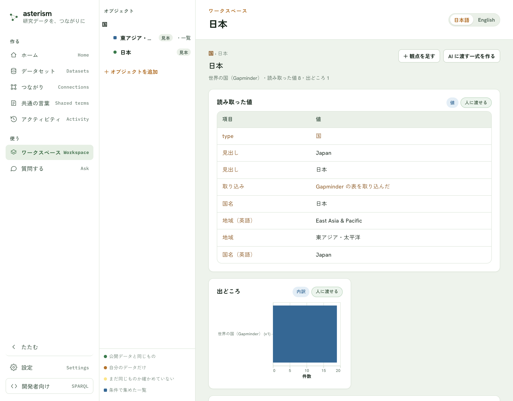
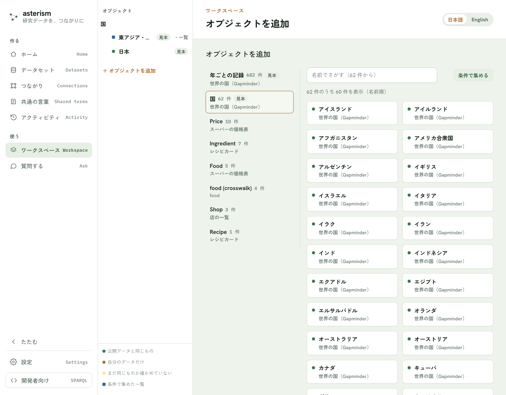
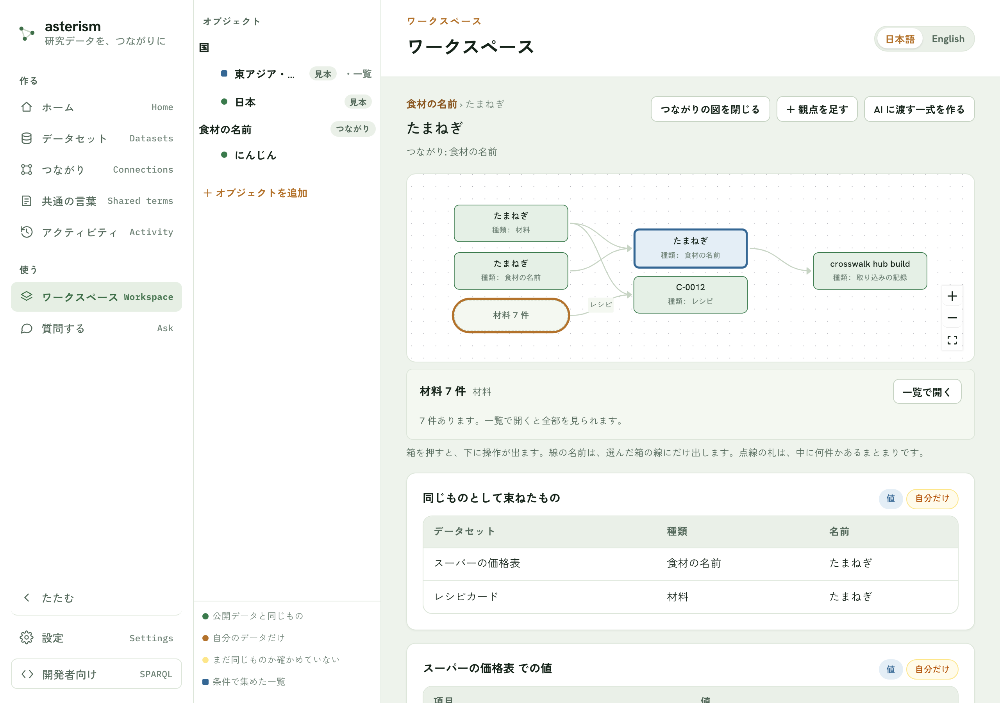
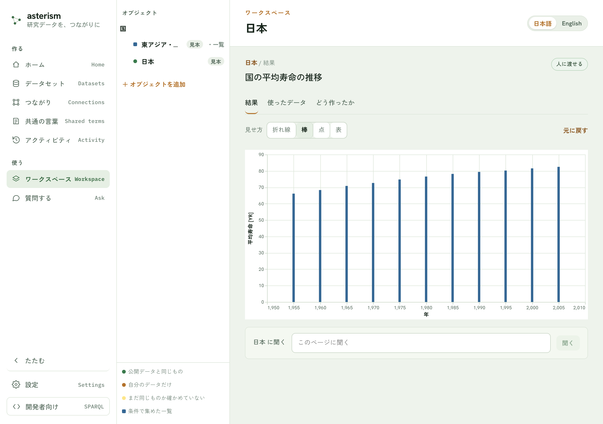
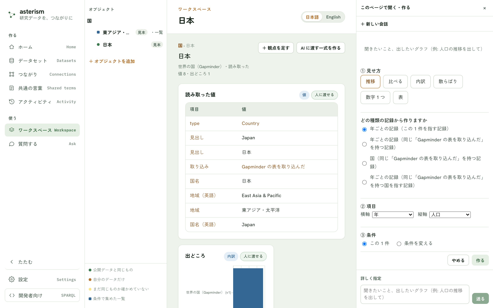
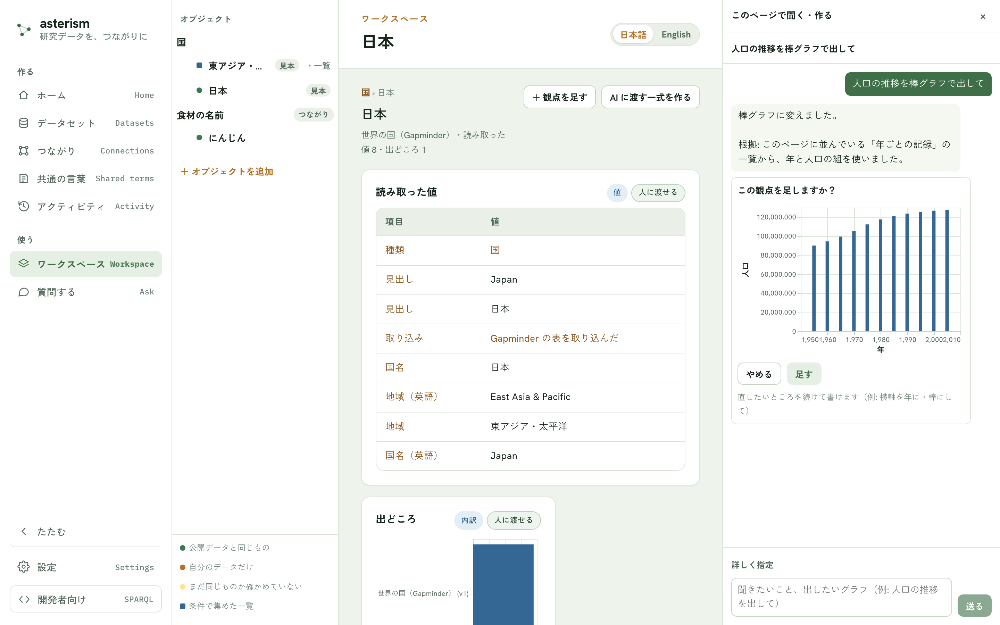
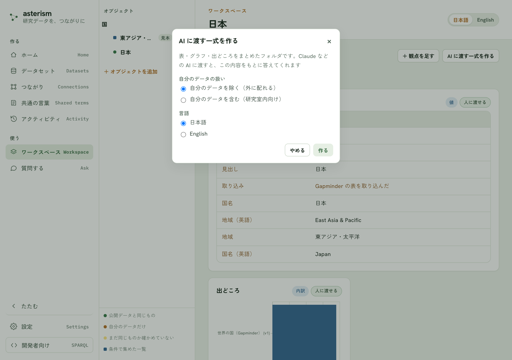
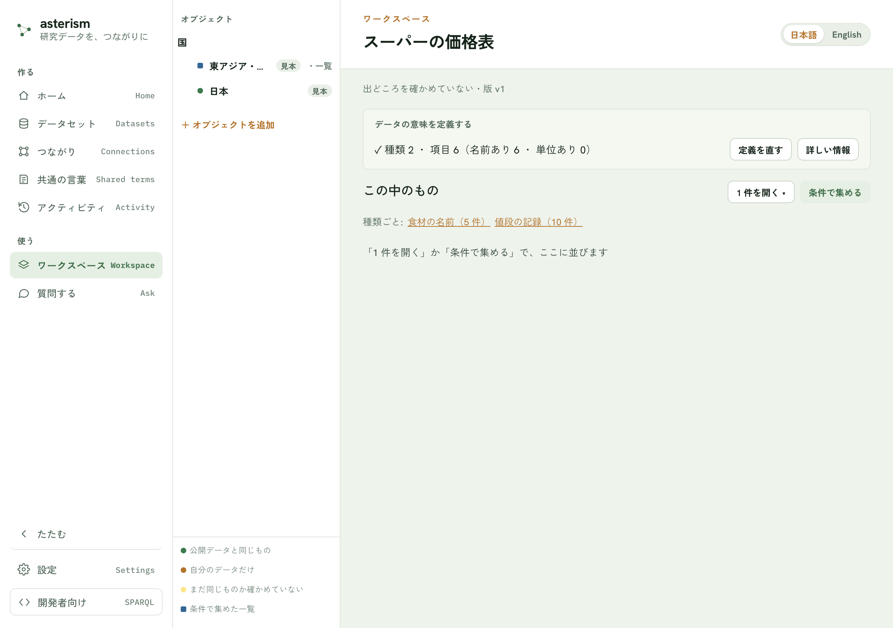
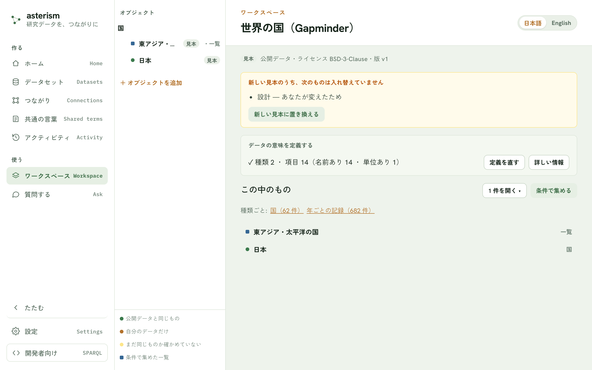

ワークスペース — 1 件を開いて、見る・聞く・作る v0.46.0 (2026-09-29) で追加
ワークスペースとは
ワークスペースは、取り込んで公開したデータを「種類 › オブジェクト › 観点」の順に開いて使う場所です。オブジェクトは、あるデータセットに出てくる 1 件（例: 1 つの国）のことです。観点は、その 1 件についてのグラフや表（推移・比べる・内訳など）のことです。
デスクトップ版では、最初に起動したときに見本「世界の国（Gapminder）」が入るので、自分のデータがまだ無くても試せます。種類は「国」、記録は「年ごとの記録」で、1 件として「日本」を開いたり、「東アジア・太平洋の国」のような一覧を作ったりできます。「国の人口の推移」「国の平均寿命の推移」は、この見本にあらかじめ用意された観点です。アプリを新しくすると見本も新しくなります。あなたが変えたところはそのままです（くわしくは、このあとの「見本が新しくなったとき」）。
メニューの「ワークスペース」で開きます。アプリを開いたときに最初に映る画面でもあります。


画面の見かた
画面は左から 3 つに分かれています。
| 列 | 何があるか |
|---|---|
| ナビ | 左のいちばん端。「作る」「使う」の見出しでメニュー項目が並びます。メニューの「ワークスペース」もここにあります |
| オブジェクトの列 | 追加したオブジェクトが種類ごとに並びます。種類の名前を押すと、その種類のページが開きます。行の色の点の意味は、列のいちばん下の凡例（公開データと同じもの／自分のデータだけ／まだ同じものか確かめていない／条件で集めた一覧）にあります |
| ページ | いま選んでいる 1 件・条件で集めた一覧・種類・データセットのいずれかの中身が表示されます |
オブジェクトの列の下にある「＋ オブジェクトを追加」ボタンから、新しいオブジェクトを選べます。
オブジェクトを追加する
「＋ オブジェクトを追加」ボタンを押すと、追加の画面が開きます。
- 左の一覧から種類を選びます。種類の名前の横に件数、その下にどのデータセットのものかが出ています
- 右側に、その種類のオブジェクトが並びます。名前でさがすか、「条件で集める」ボタンで条件を指定します
| 選びかた | 開くページ | あとから変えられるもの |
|---|---|---|
| 名前でさがして 1 件を選ぶ | その 1 件のページ | 変わりません（いつも同じ 1 件を指します） |
| 「条件で集める」ボタンで条件を決める | 条件に合うものの一覧のページ | 「条件を変える」ボタンで、集める条件を変えられます |


1 件のページを読む
1 件のページを開くと、最初から次のカードが並びます。
- 読み取った値
- 出どころ
- 作られた手順（何かから作られた記録のときだけ）
- そのデータセットにあらかじめ用意された観点（見本なら「国の人口の推移」「国の平均寿命の推移」など）
同じデータの別のページで足された観点があるときは、「同じデータで使われている観点」の帯に並びます。押すと、このページの条件で同じグラフを足せます。
各カードの右上には、そのカードの中身を表す印が付きます（値・内訳・手順・条件と量・量・量と量・順位など）。AI が書いた見せ方のカードには「AI が書いた見せ方」の印が付きます。カードの中身が外に配ってよいものかどうかは「人に渡せる」または「自分だけ」の印で分かります。
つながりを図で見る
1 件のページの右上にある「つながりを図で見る」ボタンを押すと、見出しのすぐ下に図が開きます。もう一度押す（ボタンは「つながりの図を閉じる」に変わります）と閉じます。開くまでは何も読み込みません。
図の真ん中が、いま見ている 1 件です。その 1 件からの線は右へ、その 1 件に向かってくる線は左へ並びます。線の矢印は「何が何につながるか」の向きで、線の名前はそのつながりの名前です。線の名前は、選んでいる箱につながる線にだけ出ます（全部に出すと、線が交わるところで名前どうしが重なって読めなくなるためです）。
- 箱を押すと選べます。選んだ箱の名前と種類、できる操作が図の下の帯に出ます。
- 1 件の箱を選ぶと「隣をひらく」が出ます。押すと、その箱のつながりが 1 段だけ広がります。広げたあとは「たたむ」で元に戻せます（その箱が足した箱と線だけが消えます）。「このページを開く」で、その 1 件のページへ移れます。
- 点線の丸い札は「束」です。同じ種類のつながりが多いときは、1 つずつ並べず「観測値 40 件」のようにまとめて出します。束を選ぶと、「一覧で開く」（その条件の絞り込みのページへ）か「中を見る」（先頭の何件かを箱にして、残りの件数を知らせる）が出ます。
- つながりの色の箱は、複数のデータセットで同じものとして束ねられたものです。
図の枠の右上のボタン（「大きく見る」）を押すと、図と下の帯を窓いっぱいに広げられます。広げても、ひらいた箱・選んだ箱はそのままです。広げている間はホイールで拡大・縮小でき、Esc か右上の × で元の大きさに戻ります。
図の箱は最大 80 個までです。それを超えるひらき方はできず、図の下に理由が出ます。いらない箱をたたむか、束を「一覧で開く」で見てください。開いた時点で 80 個を超えるほどつながりが多いときは、箱を選んで「このページを開く」で、その 1 件から見てください。つながりが非常に多くて一部を出せなかったときも、図の下にそう出ます。


カードを開く
カードを押すとカードの詳細が開きます。詳細には 3 つのタブがあります。
- 「結果」タブ — グラフや表そのもの
- 「使ったデータ」タブ — 使ったデータ・出どころ・いつの版か・ライセンスの一覧
- 「どう作ったか」タブ — AI に渡す一式に何が入るかの内訳、この観点をめぐって交わした会話の記録、ふだんは見なくてよい技術情報（使ったツール・実行したクエリなど）


見せ方を変える
グラフや表になっているカードは、結果の形に応じて折れ線・棒・点・表を切り替えられます。ほかに、縦横を入れ替える、色分けする、が選べる場合があります。切り替えたあとは「元に戻す」で既定の見せ方に戻せます。
選べる見せ方は結果の形で決まります（例えば 1 つの数字しか無いカードには折れ線の選択肢は出ません）。選んだ見せ方は自分の手元にだけ残り、他の人には影響しません。カードの詳細で選んだ見せ方は、一覧に並ぶカードの絵にもそのまま反映されます。
観点を足す
「＋ 観点を足す」ボタンを押すと、ページの右に「このページで聞く・作る」のパネルが開きます。ページは隠れず、横に並びます。作りかたは 2 つあります。
| 作りかた | どうするか | AI を使うか |
|---|---|---|
| 言葉で頼む | パネルのいちばん下の入力欄に、出したいグラフを書いて「送る」ボタンを押す | 使います |
| 自分で選ぶ | 「詳しく指定」を押してフォームを開く | 使いません |
フォームは次の 3 段階です。
- 見せ方（推移・比べる・内訳・散らばり・数字 1 つ・表）を選ぶ
- 項目（横軸・縦軸・分類・集計のしかたなど）を選ぶ
- 条件（この 1 件だけ／このページの条件など）を選ぶ
1 件のページでは、どの種類の記録から作るかの候補が 2 つ以上あるときだけ、見せ方を選んだあとにそれを聞かれます（この 1 件を指す記録のほか、同じ親を持つ記録なども候補になります）。候補が 1 つなら、機械がそれを使います。
「作る」ボタンを押すとその場でカードが足されます。
推移と散らばりのグラフは、横軸の範囲全体を描きます。点が 5,000 を超えるときは、範囲全体から山と谷を残して間引き、グラフの下に「全 N 点を、範囲全体から M 点に間引いて描いています」と出ます。どのカードも、元のデータの一部だけを出しているときは、その旨がカードの下に出ます。
AI の鍵を登録していないときは、パネルを開くとフォームがそのまま表示されます（「詳しく指定」を押す必要はありません）。


このページで聞く・作る
ページの下にある入力欄に聞きたいことを書いて「聞く」ボタンを押すと、同じパネルが右に開いて、AI との会話がはじまります。
- 質問には、このページに並んでいるカードの結果をもとに答えます
- 答えるのに必要な観点がページに無いときは、先に観点を足すことを提案してから答えます
- グラフや表を頼むと、提案がプレビューつきで出ます。「足す」ボタンを押すと、ページにカードとして足されます。直したいところは、続けて書けば作り直します
足したカードをあとから直したいときは、カードの「直す」ボタンから同じ会話に戻れます。直した結果は、次のどちらかを選べます。
| ボタン | どうなるか |
|---|---|
| 「差し替える」ボタン | 元のカードを、同じ位置のまま置き換えます |
| 「別のカードとして足す」ボタン | 元のカードは残し、もう 1 枚足します |
会話は観点（カード）ごとにまとまります。パネルの上の「＋ 新しい会話」ボタンで、別の話題をはじめられます。


AI に渡す一式を作る
「AI に渡す一式を作る」ボタンから、いま並んでいるカードをまとめて、Claude などの AI に渡せるフォルダを作れます。中身は、カードの詳細の「どう作ったか」タブに出る内訳と同じで、読み取った値・使った道具・カードの記録・何ができるかの説明・起動の設定です。
作るときに、自分のデータを含めるかどうかを選べます。自分のデータを除けば外部に配れる版になり、含めれば研究室内向けの版になります。ライセンスが決まっていないデータや、再配布できないデータが混ざっている場合は、外に配れる版として作れません。


データセットのページ
データセットのページは、公開した直後の画面の「データセットのページを見る」ボタンから開けます。ワークスペースからは、種類のページ（オブジェクトの列で種類の名前を押す）の「データの定義を見る」ボタンと「定義を直す」ボタンで、下と同じ「見る」「直す」に直接進めます。
- 「定義を直す」ボタン — 列・単位・名前などの定義を見直せます。まだ公開していないデータセットでは、このボタンは「続きから」になります
- 「詳しい情報」ボタン — 中身・取り込み・公開・つながり・元のファイルとの対応をまとめた詳細画面が開きます（公開済みのデータセットにだけ出ます）
- 「この中のもの」— 「1 件を開く」でこのデータセットの中から名前で選ぶか、「条件で集める」で一覧を作れます


見本が新しくなったとき
見本のページ（出どころの行に「見本」の印が付きます）には、見本の新しさについての知らせが出ます。アプリを新しくすると、見本もアプリと一緒に新しい版になります。ただし、あなたが変えたところはそのまま残ります。
- 新しくなったとき — 「この見本は ○月○日 に新しい版になりました — ……」と 1 行で知らせます
- あなたが変えたので新しくしていないものがあるとき — 「新しい見本のうち、次のものは入れ替えていません」の帯に、設計・説明・AI に渡す道具・名前・データのうち何が、どんな理由で入れ替わっていないかが並びます
- 帯の「新しい見本に置き換える」ボタン — あなたが変えたもの（設計・説明・AI に渡す道具・名前）を、新しい見本に置き換えます。押すと確認が出て、いまの内容は控えとして残ることが示されます。データを追記した・取り込み直した場合と、引用の住所が変わる版は、あなたのデータや引用の住所を守るため、このボタンでは置き換えません
- 「控えから戻す」ボタン — 置き換える前の内容を控えているときに出ます。押すと確認が出て、置き換える前の内容に戻ります（戻した部分は、また「入れ替えていないもの」に並びます）。置き換えたあとに直した分があれば、戻す前のいまの内容を別の控えとして残すので、そこから戻せます


AI に渡す道具を置き換えたときは、外部の AI からは、アプリを次に起動したときから新しくなります。置き換えと戻しは、メニューの「アクティビティ」にも 1 行ずつ残ります。
同じものは 1 つのページ
別々のデータセットにある同じ対象は、つながりを作ると 1 つのページにまとまります。詳しい仕組みは crosswalk.mdを参照してください。